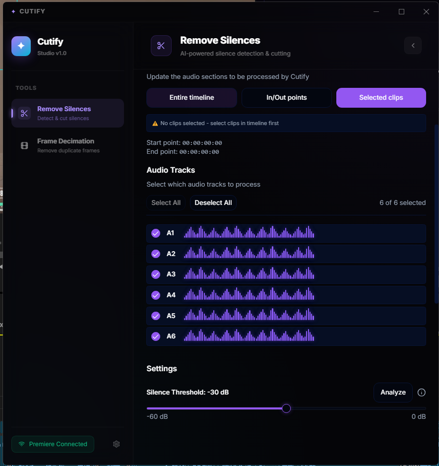
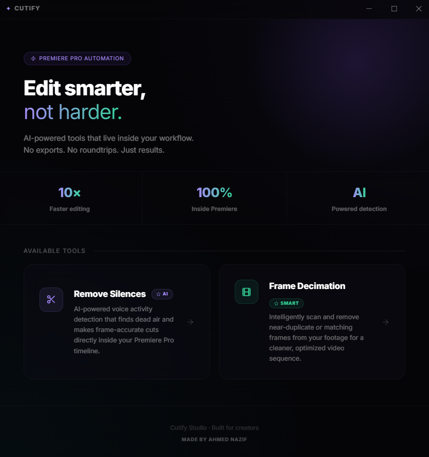

AI-powered tools that live inside your Premiere Pro timeline.
No exports. No roundtrips. Just results — in seconds.

Every feature is built to eliminate the boring parts of editing and let you focus on what matters — your story.
Our AI voice-activity detection pinpoints dead air with frame-accurate precision and makes the cuts directly inside your Premiere timeline. Select entire timeline, In/Out points, or individual clips — your choice.
Intelligently scan and remove near-duplicate or matching frames from your footage for a cleaner, optimized video sequence. Perfect for screen recordings, gameplay, and time-lapses.

Process entire timelines in seconds, not minutes.
Python, Node.js & FFmpeg are bundled. One installer does everything.
Lives inside Premiere Pro's Extensions panel. No switching apps.
A clean, beautiful interface that feels like it belongs inside Premiere Pro.
From zero to your first automated cut in under 5 minutes.
Click the download button and save Cutify-Setup-1.0.1.exe. If Windows SmartScreen appears, click More Info → Run Anyway — the app is safe and unsigned.
The installer automatically sets up Python, Node.js, and FFmpeg. No manual configuration required. Just click through and let it do its thing.
Go to Window → Extensions → Cutify inside Premiere Pro. The panel opens, Premiere connects, and you're ready to start cutting.
Download Cutify and get back to creating.
Requires Adobe Premiere Pro 2022 or later · Windows 10 / 11